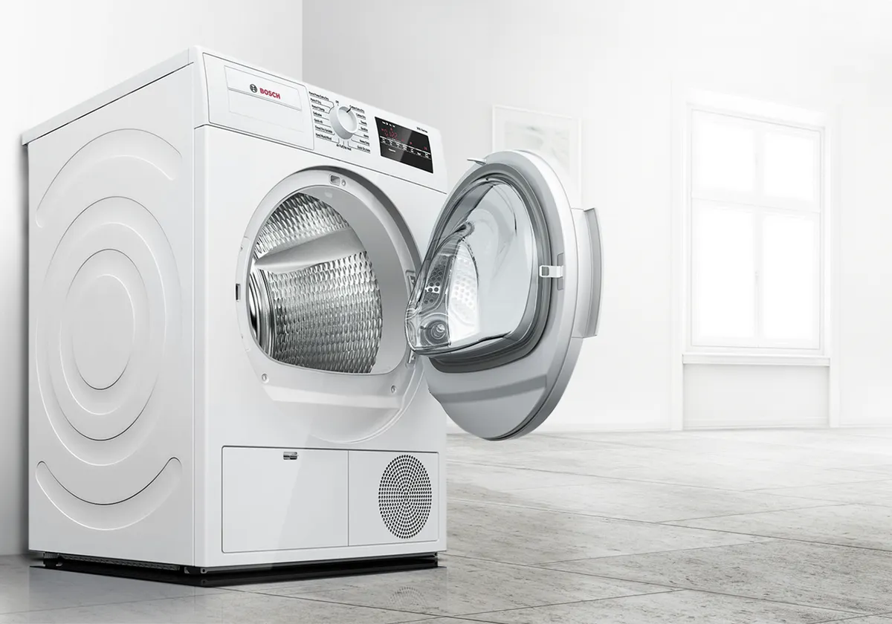

Is your washing machine not spinning, draining, filling with water, starting properly, leaking or showing an error code? MyFixer provides mobile washing machine repair for homes and businesses, with technicians who diagnose the fault and explain the available repair options.
We provide washing machine repairs in Centurion, Pretoria and Johannesburg, with selected surrounding areas including Midrand, Sandton, Randburg, Roodepoort and Fourways. Our technicians travel to you for on-site diagnostics and repairs where practical.
We repair front-load, top-load and washer-dryer machines from popular brands including Bosch, Defy, Samsung, LG, Whirlpool and Hisense, as well as other common domestic brands depending on the model and fault.
We diagnose spin problems involving the motor, drive system, bearings, door lock, control system and other components that can prevent the drum from spinning correctly.
We inspect door seals, hoses, inlet valves, pumps and other components to identify common sources of washing machine water leaks.
We diagnose washing machines that are not draining, checking drain filters, hoses, pumps and related components for blockages or faults.
We diagnose machines that are not filling with water correctly, including possible inlet valve, hose, water supply and control-related faults.
Diagnosing power problems, electrical faults, door interlocks, heating components and electronic control issues.
Checking suspension components, shock absorbers, bearings, counterweights and levelling issues that may cause excessive noise or movement.
Diagnosing washing machine doors that do not close, lock or release correctly, including common door lock, latch and control-related faults.
Diagnosing error codes and cycle problems by checking sensors, switches, valves, controls and other components that may affect normal operation.
MyFixer works on common front-load and top-load washing machines, as well as selected washer-dryer combinations. The exact repair depends on the appliance model, fault and availability of suitable parts.
Whether the washing machine is not spinning, not draining, not filling, leaking, making unusual noises or stopping during a cycle, our technician can assess the appliance and explain the appropriate repair option.
MyFixer provides mobile washing machine diagnostics and repair in Centurion, Pretoria, Johannesburg, Midrand, Sandton, Randburg, Roodepoort and Fourways, subject to technician availability.
Where practical, our technicians can assess and repair the washing machine at your home, office or business premises. If a fault requires additional testing or repair away from the site, we will explain the next step before proceeding.
Same-day washing machine repair may be available in Centurion, Pretoria, Johannesburg and selected surrounding areas, depending on technician availability and scheduling.
We repair major domestic washing machine brands including Bosch, Defy, Samsung, LG, Siemens, AEG, Whirlpool, Hisense, SMEG and others, depending on the model and fault.
Yes. Washing machine diagnostics and many repairs can be carried out at your home or business where practical. If a fault requires additional testing or repair away from the site, we will explain the next step before proceeding.
We diagnose and repair common washing machine problems including failure to spin, water leaks, drainage or pump faults, water supply problems, electrical issues, loud noises or excessive vibration, door and control faults, and error codes.